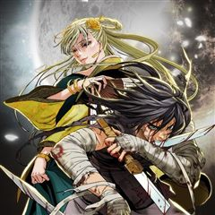
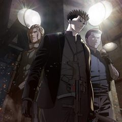
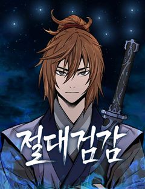
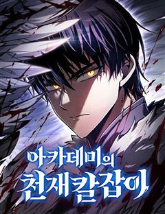
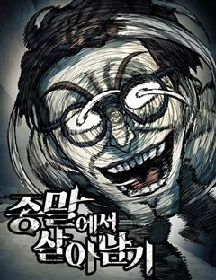
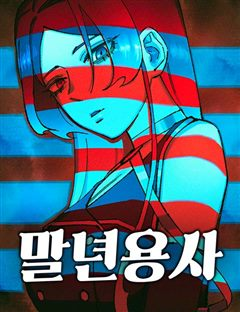
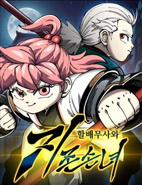
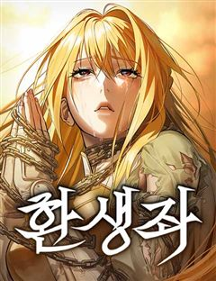
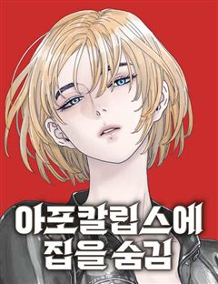
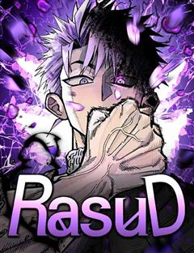

액션 방대한 세계관 웹툰 추천 TOP 30
액션 작품 중에서 세계관, 신화, 인외존재, 동양풍판타지 같은 요소가 들어간 작품만 골랐어요. 네이버웹툰·카카오웹툰·레진코믹스에서 조건에 맞는 작품 109개 중 인기 순으로 30개를 골랐어요. 인기 TOP 3: 신의 탑, 천광명월, 일렉시드
2026-10-02 기준 · 성인 작품 제외
내 취향으로 더 좁혀서 추천받기 →-
1

-
2

-
3
 네이버웹툰
네이버웹툰일렉시드
<노블레스> 손제호 작가와 <소녀더와일즈> 제나 작가가 만났다! 고양이 몸에 깃든 각성자 카이든과 각성능력을 숨겨온 고등학생 지우 러블리 2인조의 액션 판타지
액션세계관인외존재이능력배틀네이버웹툰에서 보기 → -
4

-
5

카카오웹툰갓 오브 블랙필드
"Who am I?" 프랑스 외인부대의 전설 '강찬'! 아프리카 전장에서 그를 상대한 자들은 공포와 경외를 담아 '갓 오브 블랙필드' 검은 땅의 신이라 불렀다. 하지만 수니파 추종 세력 SISS의 수뇌인 마살란 사살 작전에 투입된 강찬은 배후에서 날아든 의문의 총알에 전사하게 되고,…
액션전쟁서스펜스카카오웹툰에서 보기 → -
6
 네이버웹툰
네이버웹툰괴력 난신
살인에서 삶의 즐거움을 느끼는 '겸살귀', 정(正). 대 연목검장의 셋째공자 목경운과 똑같이 생긴 얼굴을 가졌는데... "나의 대역이 되어라. 그러면 옥에서 나갈 수 있게 해 주마." "그 기회. 제게 주시겠습니까?" '촤악-!!!' 셋째공자를 죽여버린다. 그리고 본인이 '진짜'가 되…
액션세계관동양풍판타지레드아이스 스튜디오천마네이버웹툰에서 보기 → -
7
 네이버웹툰
네이버웹툰정글쥬스
의문의 벌레약 ‘정글쥬스’로 인해 곤충인간이 되었다. 이를 숨기며 살던 대학생 장수찬은 어느 날 그 모습을 모두에게 보이게 되고, 곤충인간들의 사회로 들어가 약육강식의 논리와 맞서 싸우게 되는데... 각양각색 곤충능력자들의 판타지 액션 슈퍼스트링 유니버스의 새로운 히어로 등장!
액션인외존재현대판타지열혈캠퍼스네이버웹툰에서 보기 → -
8
 네이버웹툰
네이버웹툰멸망 이후의 세계
<전지적 독자 시점> 싱숑 작가 원작. 이것은 모두가 과거로 돌아갈 때 마지막까지 회귀하지 않았던 한 사나이의 이야기다.
액션세계관레드아이스 스튜디오액션판타지차원이동네이버웹툰에서 보기 → -
9
 네이버웹툰
네이버웹툰66666년 만에 환생한 흑마법사
강대했던 흑마법사 디아블로 볼피르. 12신의 계략에 당해 억겁 속에 봉인되었지만, 그로부터 66666년이 흘러 다시금 이 땅에 강림한다! "응애!" 웰턴 백작의 갓 태어난 장남으로. 딥다크 매직 판타지 시작!
액션신화중세판타지액션서양마법네이버웹툰에서 보기 → -
10
 네이버웹툰
네이버웹툰마도전생기
정파무림 의천맹의 최강 살수, 천하진. 자유를 찾기 위해 탈출을 감행하지만 코앞에서 목숨을 잃고 만다. 그런데… '신교불패, 만마앙복. 삼공자님의 쾌유를 경하드리옵니다!' 무림의 공적, 마교의 삼공자로 전생해버렸다?! 정파무림 최강 비밀병기 천하진의 마도무림 정복기.
액션전쟁악역이주인공지금추천작성장물네이버웹툰에서 보기 → -
11

네이버웹툰절대검감
단전이 부숴졌다는 이유로 집에서는 내놓은 자식 취급을 받던 소운휘는 혈교에 납치되어서도 삼류 첩자로 살아왔다. 어느 날, 전설로만 알려진 검선비록을 찾는데 이용당하다 죽은 운휘는 10년 전, 혈교에 납치되던 그 날로 돌아가게 되고 검의 목소리를 듣는 신비한 능력을 얻는다.
액션모험동양이능력성장물네이버웹툰에서 보기 → -
12
 네이버웹툰
네이버웹툰게임 속 바바리안으로 살아남기
지금껏 아무도 클리어하지 못한 게임 [던전 앤 스톤]을 9년간 플레이한 끝에 최종 보스 스테이지에 도달한 이한수. 그러나 보스 방에 입장함과 동시에, 튜토리얼 완료라는 멘트와 함께 [던전 앤 스톤] 속 바바리안 '비요른 얀델'에 빙의하게 된다. 도시에서 부과하는 막대한 세금을 내지 못…
액션인외존재게임생존판타지네이버웹툰에서 보기 → -
13

네이버웹툰아카데미의 천재칼잡이
후회로 점철된 채 끝나버린 삶. 우연히 찾아온 두 번째 기회. 세상을 구하기 위한 로난의 모험이 시작된다.
액션인외존재액션판타지마법크리처네이버웹툰에서 보기 → -
14
 네이버웹툰
네이버웹툰환생천마
철혈의 맹주, 강호의 절대자 '천하진'. 가문의 수치라 불리는 망나니 '벽리단'의 몸으로 깨어나다! 취미는 사기도박, 검은 창고에 박아둔지 오래. 하루아침에 천하제일인에서 천하의 쓰레기가 된 그는 다시 검을 잡고, 전생에서 이루지 못한 경지에 오르고자 한다.
액션동양풍판타지사이다천마동양네이버웹툰에서 보기 → -
15

네이버웹툰종말에서 살아남기
평생 지하실에 감금되어 훈련받은 소년. 그리고 그를 가둔 미치광이 아빠가 하는 말 "종말이 온다." 지금껏 수없이 반복해온 훈련과 생존 지식으로 종말에서 살아남아야만 한다.
액션인외존재시리어스생존크리처네이버웹툰에서 보기 → -
16
 네이버웹툰
네이버웹툰염라강림
지옥이 망했다. 피가 흘러야 할 황천에는 맑은 물이 흐르고 망자들을 끓이던 솥은 차갑게 식은지 오래다. 은퇴한 염라대왕은 자신의 행복을 위해 윤회의 길을 택하고자 하지만, 혼란스러워진 지옥과 사라진 자신의 후임 털보로 인해 윤회의 길을 걸을 수 없게 된다. 인간 세상의 신이 되기 위하…
액션신화인외존재동양풍판타지동양네이버웹툰에서 보기 → -
17네이버웹툰
사형집행관
히어로 시절에 죽이지 못하고 감옥에 수감시켜 놓았던 빌런들. 이제는 교도관이 되어 자신의 손으로 사형을 집행한다.
액션세계관사이다자극적인이능력네이버웹툰에서 보기 → -
18

네이버웹툰말년용사
전역하기 3일 전 어이없는 사고로 죽어버린 말년 병장. 갑자기 이세계로 떠나라는 현실을 받아들이지 못하고 난리를 치다 맨몸으로 이세계에 떨어지는 벌을 받게 된다. 말년 병장의 눈물겨운 밀리터리 생존 판타지!
액션신화액션판타지개그2020 지상최대공모전네이버웹툰에서 보기 → -
19
 네이버웹툰
네이버웹툰권왕환생
주먹 하나로 무림을 누빈 남자 단우성. 갑작스레 마도에게 죽음을 맞이하고, 돈 많은 은하상단의 대공자의 몸에서 다시 눈을 뜨다. “나는 은원에서 자유롭길 바라지 않아. 은혜가 있으면 갚고, 원한이 있어도 갚아줘야지.” 가진 것이라고는 돈밖에 없는 대공자 몸이지만, 압도적인 재력과 전생…
액션세계관사이다환생소설원작네이버웹툰에서 보기 → -
20
 네이버웹툰
네이버웹툰모든걸 기억하는 천재무사
모든걸 기억하는 삼류무사 진소운. 30년 전 마교가 재림하기 전으로 회귀하다. 과거로 돌아온 사실이, 딱히 날더러 세상을 구하라는 신호로는 보이진 않는다. ‘그랬다면 최소한 뭔가 특별한 능력을 주거나 장삼봉 조사의 영혼 같은 거라도 붙여줘야 했을 테니까?’ 답 없는 삼류 문파인 사문.…
액션동양풍판타지레드아이스 스튜디오액션판타지소년물네이버웹툰에서 보기 → -
21네이버웹툰
용사보다 너무 강해서 힘을 숨김
어릴 적부터 만화 속에 나오는 주인공보다 평소에는 가벼워 보이지만 사실 누구보다 강한 '힘을 숨긴 캐릭터'가 멋있었다 그리고 찾아온 전생의 기회! "새로운 세상에서 무엇이 되고 싶나요?" "힘숨찐이 되고 싶어!" ...내가 바란 힘숨찐은 이런 게 아닌데!?
액션신화인외존재액션판타지마법네이버웹툰에서 보기 → -
22
 네이버웹툰
네이버웹툰레드셔츠
킬러 회사의 전설, 차시혁. 사랑하는 여자를 만나 은퇴를 결심하지만, 회사는 그를 쉽게 놔줄 생각이 없었다. 결국, 그의 모든 것을 앗아가기 시작하고, 차시혁은 다시 칼을 든다. 복수가 시작되고, 거대한 조직 ‘네빌가’와의 전쟁도 피할 수 없게 되는데… 복수의 칼날 끝, 과연 무엇이…
액션전쟁미친작화요즘핫한추천작복수극네이버웹툰에서 보기 → -
23

네이버웹툰할배무사와 지존 손녀
죽을 날을 앞두고 미련없이 생을 마무리 하려던 순간 덮친 멸문지화! 유진산은 홀로 생존한 갓난 손녀 '유설'이 다 자랄 때까지만이라도 살아남기로 결심한다. 이미 늙어버린 몸으로 육아와 수련을 병행하며 눈물겨운 사투를 벌이는 동안, 어느새 무림지존의 기재를 타고난 손녀는 믿을 수 없이…
액션모험정통무협가족성장물네이버웹툰에서 보기 → -
24

네이버웹툰환생좌
신의 심심함을 만족시키기 위해 시작된 이면세계, 그로 인해 멸망 직전 위기에 처한 인류는 마지막 생존자 중 한 명인 '강한수'를 과거로 보내 미래를 바꾸려 한다. "너희가 가장 믿어야 할 것은 자신의 능력이다. 쓸모없으면 반드시 버려지기 마련이지"
액션신화인외존재액션판타지상태창네이버웹툰에서 보기 → -
25네이버웹툰
황제의 검
정난의 변에서 간신히 살아난 주윤문, 마교 천하제일 천마(天魔)와 소림사 육조 혜능(慧能)을 몸 안에 받아 천마서생 '파천'으로 재탄생하게 되는데… 절대지존을 향한 파천의 새로운 이야기가 시작된다!
액션신화인외존재전쟁서양네이버웹툰에서 보기 → -
26

네이버웹툰아포칼립스에 집을 숨김
3년 뒤, 이 세상이 멸망하리라 예측하고 온갖 대비를 해온 '멸망주의자' 박규. 그리고 그의 예상대로, 어느 날 서울 핵 공습을 시작으로 전 세계는 핵 전쟁에 돌입. 미증유의 아포칼립스가 펼쳐진다. 모두의 비웃음에도 불구하고 전 재산을 털어 3년 전부터 묵묵히 자신만의 방공호를 파내려…
액션인외존재생존크리처고인물네이버웹툰에서 보기 → -
27
 네이버웹툰
네이버웹툰배드 본 블러드
인류의 보금자리는 더는 지구가 아니며, 성간비행은 상식이고, 기계가 피와 살을 대체하는 시대. 하층 구역 출신의 루카는 열다섯이 되었고, 선별검사 적성은 ‘근위대’였다.
액션세계관레드아이스 스튜디오사이버펑크SF액션네이버웹툰에서 보기 → -
28

네이버웹툰라서드
절대적 권능을 지닌 11인의 왕과, 왕을 수호하기 위한 기사단이 존재하는 세계. 수습기사 힌타는 파트너 캐넛과 함께 정식 기사가 되기 위한 모험을 떠나는데... 정식기사가 되기 위한 소년들의 고군분투 정통판타지액션!
액션세계관모험액션판타지중세판타지액션네이버웹툰에서 보기 → -
29

-
30네이버웹툰
강철을 먹는 플레이어
강철대제 이현욱, 인류의 마지막 구원자인 그가 죽었다. 미래를 바꾸기 위해 그가 회귀한 곳은… 군대?!! 왜 하필 여기냐고!” 복수를 위해 특급 성장하는 이현욱 상병의 강철 먹방이 시작된다!
액션인외존재현대판타지상태창크리처네이버웹툰에서 보기 →